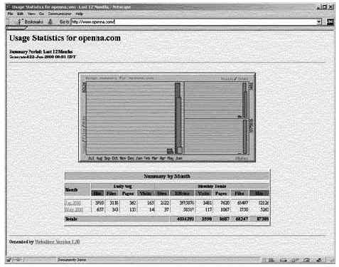

Глава 20 Опциональные компоненты устанавливаемые с веб-сервером Apache
- WebalizerВ этой главе
Webalizer
Конфигурации
Информирование
Apache о выходном каталоге Webalizer
Запуск
Webalizer вручную в первый раз
Запуск
Webalizer автоматически при помощи cron
FAQ-O-Matic
Информирование
Apache о месте расположения файлов Faq-O-Matic
Настройка
FAQ-O-Matic
Webmail
IMP
Установка
PHPLib который требуется программе Horde из Webmail IMP
Настройка и
создание SQL базы данных Webmail IMP
Настройка
вашего конфигурационного файла "php.ini" из PHP4
Настройка
Apache на работу с Webmail IMP
Настройка
Webmail IMP из вашего веб-броузера
|
 |
В этой главе, я буду говорить о трех полезных внешних
программах, которые можно инсталлировать на ваш Linux сервер. Эти программы
созданы для использования с веб сервером Apache и полезны если вы планируете
использовать Apache в вашей организации. Если это не так, то вы можете
пропустить эту главу и затем продолжить чтение этой книги. Вначале мы будем
говорить о Webalizer, который предназначен для анализа файлов регистраций веб
сервера. Затем мы обсудим FAQ-O-Matic, который может быть использован для
создания списков FAQ, базы данных отслеживания ошибок, документации и много
другого на вашем сервере. В Заключении, мы будем говорить об очень тонкой
интересной программе, называемой Webmail, которая позволит вам предлагать вашим
клиентам почтовые бюджеты, или доступ и чтение почты в безопасным способом.
Краткий обзор
Веб сервер Apache регистрирует всю предписанную информацию в
тестовый файл, который может быть просмотрен и проанализирован веб
администратором. Этот файл также может быть обработан специальной программой,
которая создает отчеты в виде графических представлений.
Как написанов файле README Webalizer:
Webalizer - это программа для анализа файлов регистраций веб
сервера, которая создает отчеты в HTML формате для просмотра в броузере.
Результаты представляются в виде таблиц и графиков, которые облегчают
интерпретацию полученной информации. Программа наряду с ежегодной, ежемесячной,
ежедневной и почасовой статистикой использования, отображает информацию об
использовании сайта, URL, referrer, пользовательских агентах (броузерах) и
странах (пользовательские агенты и referrer доступны только при использовании
комбинированного формата файлов регистрации).
Эти инструкции предполагают.
Unix-совместимые
команды.
Путь к исходным кодам "/var/tmp" (возможны другие
варианты).
Инсталляция была проверена на Red Hat Linux 6.1 и 6.2.
Все шаги
инсталляции осуществляются суперпользователем "root".
Webalizer версии
1_30-04
Пакеты.
Домашняя страница Webalizer: http://www.mrunix.net/webalizer/
FTP сервер Webalizer: 207.153.121.6
Вы должны
скачать: webalizer-1_30-04-src.tgz
Раскройте тарбол:
[root@deep /]#
cp webalizer-version-src.tgz /var/tmp/
[root@deep /]# cd
/var/tmp/
[root@deep tmp]# tar xzpf webalizer-version-src.tgz
Предварительные требования
Webalizer требует наличия графической библиотеки GD, которая
требуется для генерации встроенных графиков Webalizer. Если это не так, то вы
должны инсталлировать ее из вашего Red Hat Linux CD-ROM.
Для проверки наличия
установленной библиотеки GD используйте следующую команду:
[root@deep /]# rpm -qi gd
package gd is not
installed
Для инсталляции пакета GD на вашей Linux системе используйте
команду:
[root@deep /]# mount /dev/cdrom /mnt/cdrom/
[root@deep /]# cd /mnt/cdrom/RedHat/RPMS/
[root@deep RPMS]# rpm -Uvh gd-version.i386.rpm
gd ##################################################
[root@deep RPMS]# rpm -Uvh gd-devel-version.i386.rpm
gd-devel ##################################################
[root@deep RPMS]# cd /; umount /mnt/cdrom/
Веб сервер должен быть уже установлен на вашей системе.
Замечание. Для большей информации о веб сервере Apache
читайте соответствующую главу этой книги.
Компиляция
Переместитесь в новый каталог Webalizer и введите следующие
команды на вашем терминале:
CC="egcs"
\
CFLAGS="-O9 -funroll-loops -ffast-math -malign-double -mcpu=pentiumpro
-march=pentiumpro -fomit-frame-pointer -fno-exceptions" \
./configure
\
--prefix=/usr
[root@deep webalizer-1.30-04]# make
[root@deep
webalizer-1.30-04]# make install
[root@deep webalizer-1.30-04]# mkdir
/home/httpd/usage
Команда "make" будет компилировать все файлы с исходными кодами
в двоичные исполняемые файлы, команда "make install" проинсталлирует все
двоичные и сопутствующие им файлы в требуемые места. Команда "mkdir" создаст
новый каталог "usage" в каталоге "/home/httpd/", где мы будем размещать все
связанные с Webalizer файлы.
Очистка после работы[root@deep /]# cd /var/tmp
[root@deep tmp]# rm -rf
webalizer-version/ webalizer-version-src.tgz
Команды "rm" будет удалять все файлы с исходными кодами,
которые мы использовали при компиляции и инсталляции Webalizer. Также будет
удален сжатый архив Webalizer.
Все программное обеспечение, описанное в книге, имеет
определенный каталог и подкаталог в архиве "floppy.tgz", включающей все
конфигурационные файлы для всех программ. Если вы скачаете этот файл, то вам не
нужно будет вручную воспроизводить файлы из книги, чтобы создать свои файлы
конфигурации. Скопируйте файлы связанные с Webalizer из архива, измените их под
свои требования и поместите в нужное место так, как это описано ниже. Файл с
конфигурациями вы можете скачать с адреса: http://www.openna.com/books/floppy.tgz
Для запуска Webalizer должен быть создан, либо скопирован
следующий файл:
Копируйте webalizer.conf в каталог "/etc/".
Вы можете взять эти файлы из нашего архива floppy.tgz.
Конфигурация файла "/etc/webalizer.conf"
"/etc/webalizer.conf" является конфигурационным файлом по
умолчанию для Webalizer. С его помощью, вы можете определить какие каталоги или
страницы на вашем веб сервере анализировать, какие URL-ы скрывать и пр. По
умолчанию, программа Webalizer будет инсталлировать простой конфигурационный
файл с именем "webalizer.conf.sample" в каталог "/etc/". Вы можете использовать
его, переименовав в "webalizer.conf", чтобы Webalizer мог найти его и
использовать. В этом файле можно использовать много разных опций, поэтому важно
прочитать документацию поставляемую с Webalizer, чтобы получить больше
информации о различных установках и параметрах. Ниже мы прокомментируем наиболее
важные и часто используемые параметры.
Редактируйте файл
webalizer.conf.sample (vi /etc/webalizer.conf.sample) или создайте файл
webalizer.conf (touch /etc/webalizer.conf) и добавьте/измените следующее:
LogFile /var/log/httpd/access_log
OutputDir /home/httpd/usage
Incremental yes
PageType htm*
PageType cgi
PageType php
HideURL *.gif
HideURL *.GIF
HideURL *.jpg
HideURL *.JPG
HideURL *.ra
IgnoreURL /taskbar*
Эти опции говорят webalizer следующее:
LogFile /var/log/httpd/access_log
Опция "LogFile"
определяет файл регистрации обрабатываемый Webalizer. По умолчанию он
подразумевает файл "access_log" от веб сервера Apache, но вы можете определить
другой, например файл "access.log" от прокси сервера Squid, используемого в
режиме httpd-акселератора. Смотрите главу 18, "Программное обеспечение прокси
сервера ", для получения большей информации.
OutputDir /home/httpd/usage
Опция "OutputDir"
определяет месторасположение выходного каталога, используемого для хранения
отчетов Webalizer. Рекомендуется, чтобы вы создали этот каталог там, где
располагается ваш веб сервер Apache.
Incremental yes
Опция "Incremental" если установлена
в "Yes" говорит программе обрабатывать часть файла регистрации, и позволит вам
ротировать ваши файлы регистраций так много раз как вам надо без потери
информации о доступе к серверу. Рекомендуется установить эту опцию в "Yes".
PageType htm* cgi php
Опция "PageType" определяет
файлы с какими расширениями Webalizer обрабатывает как страницы. Каждое
добавление нового расширения должно быть в отдельной строке, как это показано в
конфигурационном файле.
HideURL *.gif *.GIF *.jpg *.JPG *.ra
Опция "HideURL"
определяет какие элементов (графические файлы, аудио файлы и другие не 'html'
файлы) скрываются в отчетах. Каждый добавляемый элемент должен быть в отдельной
строке, как это показано в конфигурационном файле.
IgnoreURL /taskbar*
Опция "IgnoreURL" определяет URL,
которые полностью игнорируются в создаваемых отчетах. Эта опция может быть
использована для игнорирования каталогов, которые не важны для ваших отчетов.
Она также полезно, когда вы хотите определять, какие URL должны быть обработаны,
а какие нет.
ЗАМЕЧАНИЕ. Если вы решили использовать существующий файл
"/etc/webalizer.conf.sample" для настройки ваших параметров для Webalizer, не
забедьте переименовать его в "webalizer.conf" или программа не найдет его.
Сейчас, когда Webalizer инсталлирован на вашей системе, мы
должны добавить следующие строки в файл "httpd.conf"
Шаг 1
Редактируйте файл httpd.conf (vi /etc/httpd/conf/httpd.conf) и
добавьте следующие строки между тэгами секции <IfModule mod_alias.c> и
</IfModule>:
Alias /usage/ "/home/httpd/usage/"
<Directory "/home/httpd/usage">
Options None
AllowOverride None
Order deny,allow
Deny from all
Allow from 192.168.1.0/24
</Directory>
Шаг 2
Не забудьте перезагрузить ваш веб сервер, чтобы изменения
внесенные в файл "httpd.conf" вступили в силу:
[root@deep /]# /etc/rc.d/init.d/httpd restart
Shutting down http: [ OK ]
Starting httpd: [ OK ]
Сейчас наступило время запустить программу генерирующую отчеты
(html) и графики в выходном каталоге Webalizer так, чтобы мы могли увидеть их в
окне броузера. Этот шаг требуется только при первом запуске после инсталляции,
так как в будущем это будет делать cron.
Для запуска Webalizer вручную, используйте команду
[root@deep /]# /usr/bin/webalizer
Webalizer V1.30-04
(Linux 2.2.14) English
Using logfile /var/log/httpd/access_log
Creating
output in /home/httpd/usage
Hostname for reports is
'deep.openna.com'
History file not found...
Previous run data not
found...
Saving current run data... [03/06/2000 04:42:03]
Generating
report for March 2000
Generating summary report
Saving history
information...
81 records (2 ignored) in 0.31 seconds
На этой стадии, мы должны проверить, что Webalizer работает
корректно. Чтобы сделать это наберите в окне броузера следующий адрес:
http://my-web- server/usage/. Где <my-web-server> - это адрес вашего веб
сервера, а </usage> - это каталог в котором располагаются отчеты
Webalizer.

Последнее, что вы должны сделать, это автоматизировать задачу
генерации отчетов программой Webalizer. Поместите соответствующий элемент в
crontab пользователя root, чтобы сделать запуск Webalizer работой cron. Для
этого вы должны редактировать ваш файл crontab и добавить в него строку,
запускающую Webalizer каждые, например, 28 минут:
[root@deep /]# crontab -e
# Run Webalizer to update Apache Log
files every 28 minutes.
28 * * * * /usr/bin/webalizer
Инсталлированные файлы
> /etc/webalizer.conf.sample
> /usr/bin/webalizer
> /usr/man/man1/webalizer.1